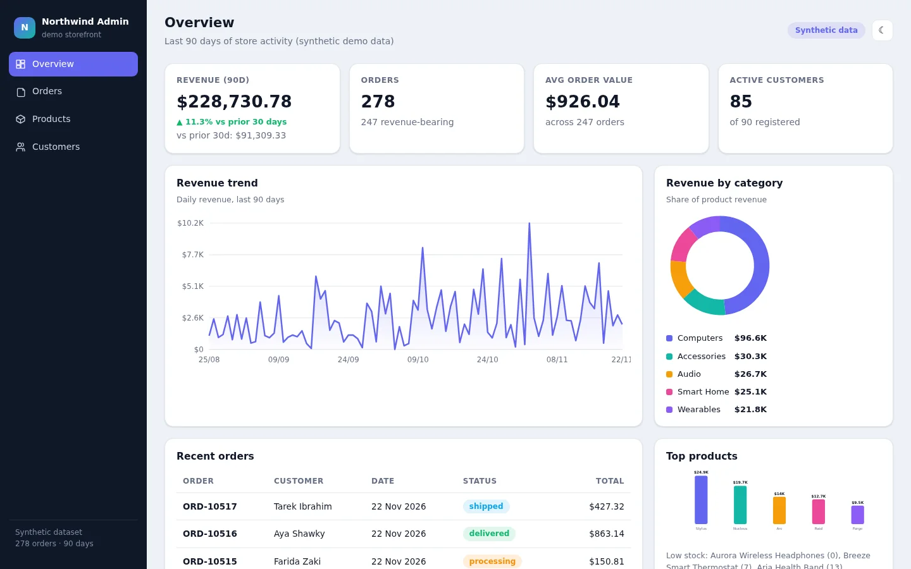
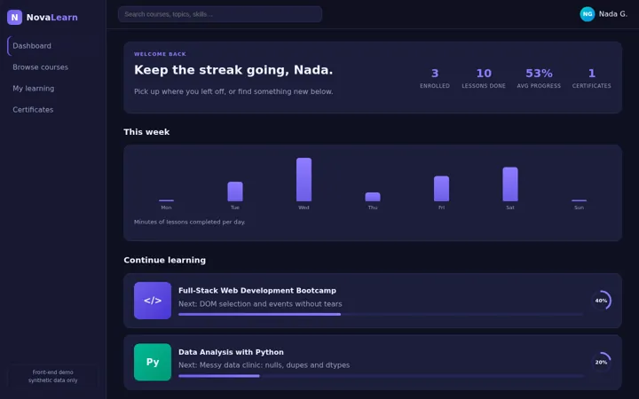
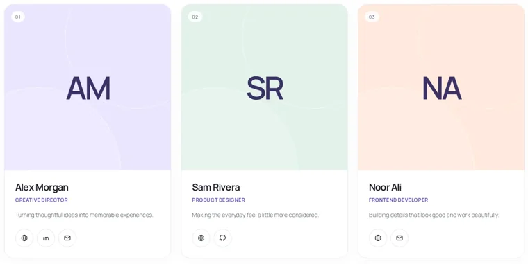
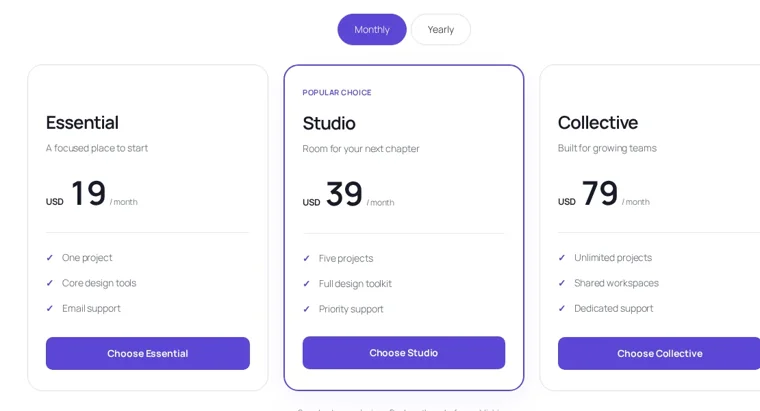
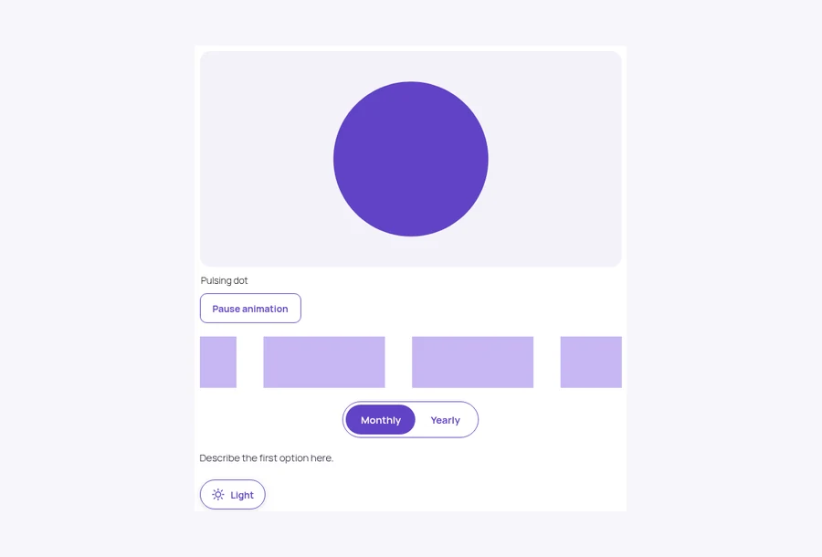
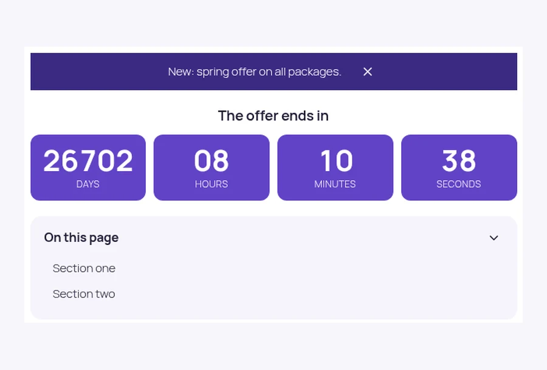
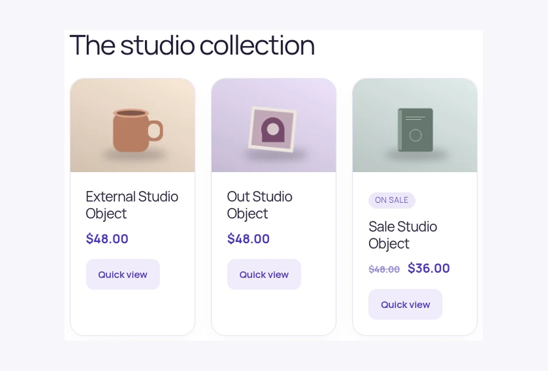
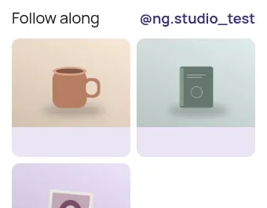
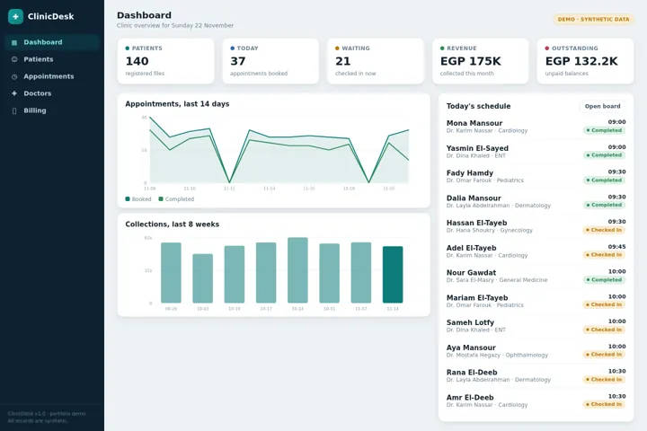

ClinicDesk
A full-stack clinic demo covering patients, appointments, visits and billing.
INDEPENDENT WEB DEVELOPER
I'm Nada Gamal. I shape WordPress websites and practical web tools, from a clear first screen to the details behind it.
WORDPRESS / CUSTOM CODE / AUTOMATION
REAL BUILDS / SELECTED SCREENS


Northwind Admin + NovaLearn
Working demos. Synthetic data.
01 / SELECTED BUILDS
Built demonstrations, a released WordPress toolkit and delivered prototypes. Real screens first. Scope, source and honest limits one click away.
A full-stack clinic demo covering patients, appointments, visits and billing.
An original Elementor add-on. The latest release, v0.18.0, includes 80 widgets, with a 100-widget roadmap.
A working front-end admin demo for products, orders, customers and store activity.
A working LMS front-end demo with courses, quizzes, progress and certificates.
A dependency-free habit tracker with check-ins, streaks, history and local browser storage.
Three importable workflows for appointment reminders, saved links and medical-content drafts.
A connected workspace kit for clients, projects, invoices and tasks.
Content automation for several brands, with a human approval step and an Arabic interface. Hosted demo is interactive on shared demo data.
Bilingual helpdesk with SLA timers, internal notes, a knowledge base and a customer portal. Hosted demo is fully interactive on shared demo data.
Bilingual invoicing with clients, partial payments, overdue tracking and a live dashboard. Hosted demo is interactive on shared demo data.
Bilingual CRM with a drag-and-drop lead pipeline, notes, follow-up reminders and a live dashboard. Hosted demo is interactive on shared demo data.
Restaurant system: QR menu ordering that works offline, a live kitchen display, inventory tied to every order and sales reports. Arabic and English.
Offline-first bilingual clinic app: patient self-booking, dental chart, X-rays, branded prescriptions, installments, profit reports and roles. Private demo data per browser.
Bilingual HR system: leave approvals, shift-based attendance with offline check-in, a leave calendar, a payroll estimate and three roles. Hosted demo is interactive on shared demo data.
Bilingual Egyptian real-estate marketplace with map-less area search, plus a broker CRM: leads, viewings, deals pipeline and commission. Shared demo data.
Bilingual online course platform: searchable catalog, lesson player with progress, server-scored quizzes, PDF certificates and an instructor dashboard. Shared demo data.
Delivery dispatch and tracking in Arabic and English: customer tracking by code, dispatcher board with zone fee rules and late alerts, and an offline-friendly driver view. Shared demo data.
A capture-first mobile notes app with tags, archive actions and local persistence.
A Python assistant prototype with a command-line interface and a small tool loop.
A custom WordPress clinic website with technical SEO, WebP assets and caching.
WordPress maintenance, malware cleanup, content structure and technical SEO.
A named medical-content client project, kept separate from website design claims.
Gym membership management in Arabic and English: a check-in desk that decides who may enter, renewals and freezes, class booking with waitlists, receipts and owner reports. Shared demo data.
Elite WatchWooCommerce store · Evidence and final case study pending
SadaTraining blog · Evidence and final case study pending
ITI training projectsPHP/MySQL applications · Case-study examples in preparation
Saved-item classifierPython utility · Validation and sample output pending
Project scaffolderPlanned · Not yet a completed project
UI-to-code converterPlanned · Not yet a completed project
Link-in-Bio platformPlanned · Not yet a completed project
Content automation platformPlanned · Not yet a completed project
Screenshots show the actual builds. Demo dashboards use synthetic records, not client results. Client HQ uses its product cover. Case studies without a verified screenshot are marked clearly. AI-assisted implementation and production limits are recorded on each project page.
INSIDE NG STUDIO PRO
80 built widgets in v0.18.0. Captures from v0.15.0, from image galleries to team cards. The 100-widget collection remains the roadmap.


Historical fixtures. These show earlier widget styling, not the current default-image audit.











Real plugin test captures, not client websites. Names, testimonials, prices, products and metrics are sample content. Static images do not demonstrate every interactive state.

02 / A LITTLE ABOUT ME
I care about the part where an idea becomes something people can actually use.
I'm a freelance software and WordPress engineer, working independently since 2024. My practice covers custom WordPress development, PHP/MySQL applications, technical SEO, performance work and security cleanup.
I trained in software engineering at ITI's Qena branch in March 2024. My earlier background is in media and journalism. Today, I bring that attention to communication into the way I structure content and build interfaces.
My toolkit includes Bricks, Blocksy, Elementor Pro, HTML, CSS, JavaScript, PHP and MySQL. I'm also exploring AI workflows, RAG and MCP integrations.
03 / HOW I CAN HELP
From a focused business website to a tailored digital tool, the approach starts with what you need, not a preset template.

Custom WordPress websites with Bricks, Blocksy and Elementor Pro. Responsive interfaces, custom PHP/CSS extensions and thoughtful content structures.
↗
Purpose-built interfaces and PHP/MySQL web applications. Responsive front ends, clear data flows and custom functionality without unnecessary plugin bloat.
↗
WordPress remediation, malware and rogue-user cleanup, WebP assets, caching and technical SEO. Practical fixes, with scope and handover notes kept clear.
↗A CLEAR WAY TO WORK
A working approach, not a promise of a fixed timeline or a one-size-fits-all package.
Audience, content, constraints and what the first release needs to do.
Review real screens and working flows. Keep decisions and limits visible.
Responsive layouts, keyboard paths and the actual functions in scope.
Source, setup and next steps. Know what is ready and what still needs work.
YOU ARE LOOKING AT ANOTHER BUILD
Static HTML, CSS and JavaScript. Local images and fonts, progressive enhancements and no analytics. The contact brief stays on your device. Built with AI assistance under Nada’s direction.
04 / YOUR NEXT PROJECT
For a project or a role, share the context, the people it should help and the scope you have in mind. We can start with the essentials and work out a useful next step.
nadagamal8510@gmail.com ↗Prefer to gather your thoughts first? Download a brief, then share it by email. The form does not send a message.